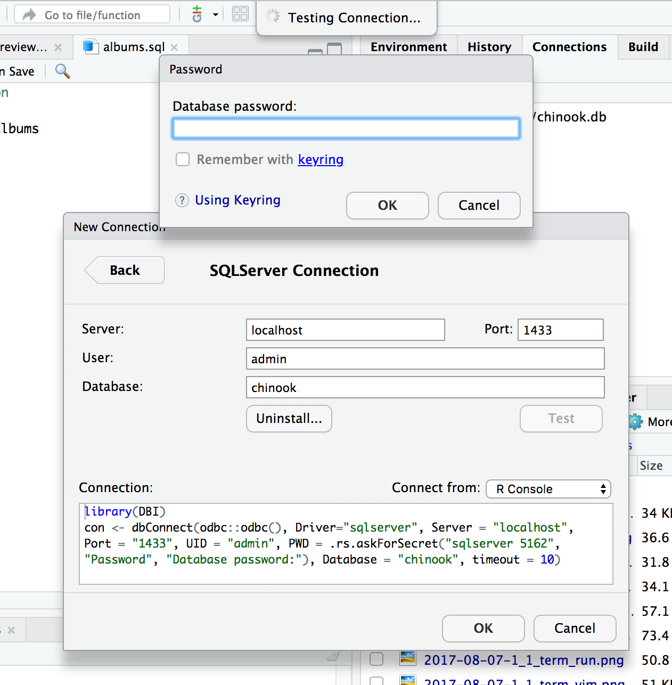
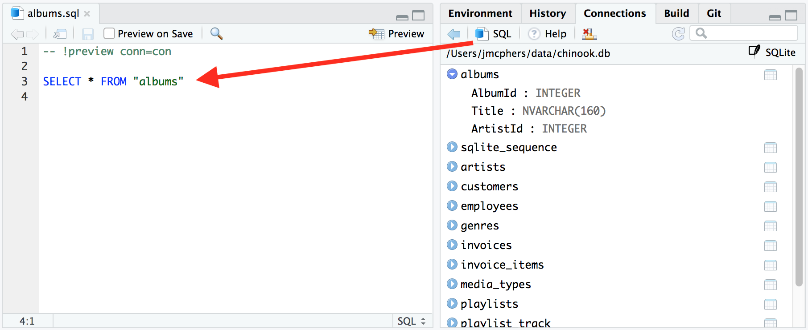
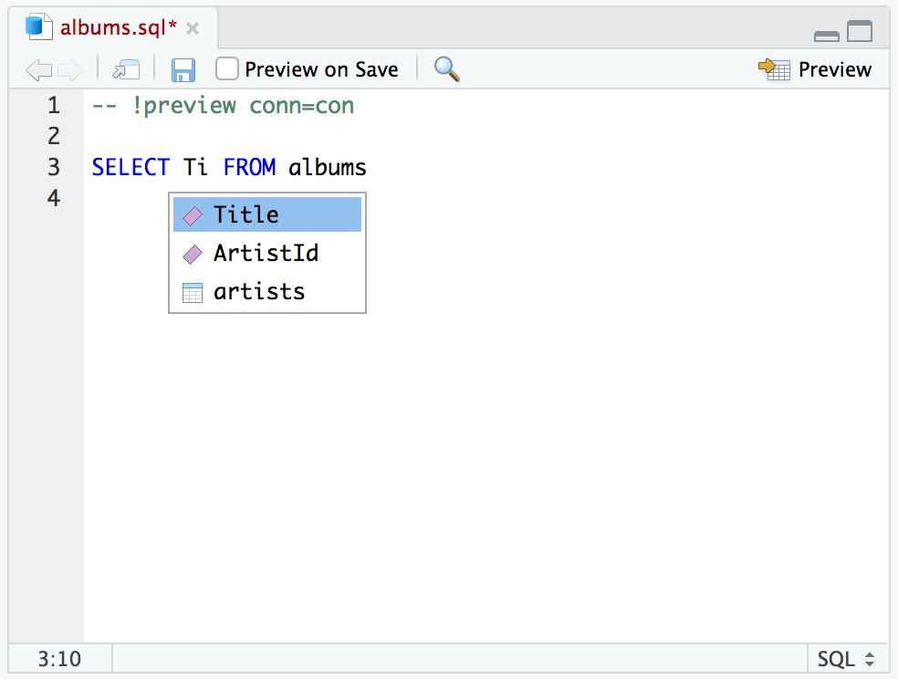
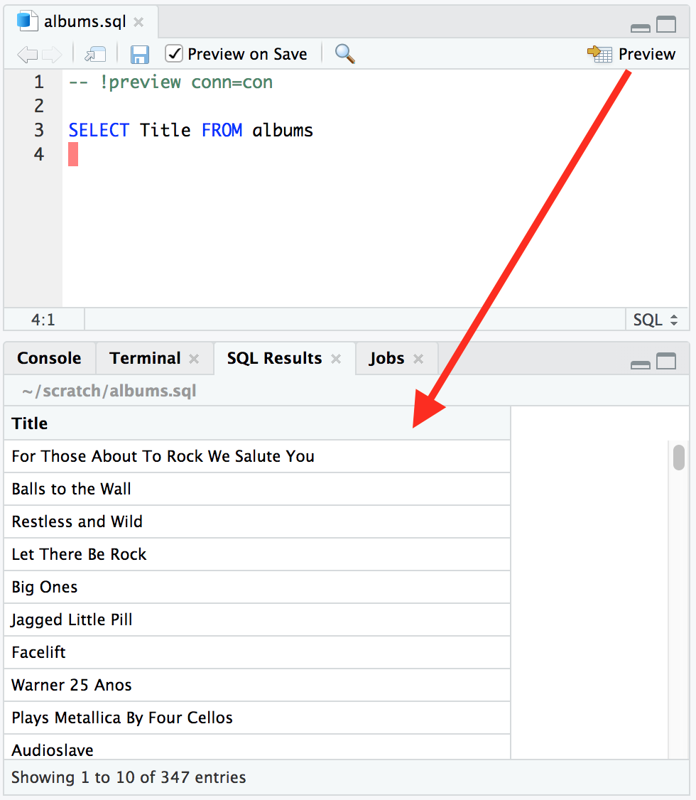
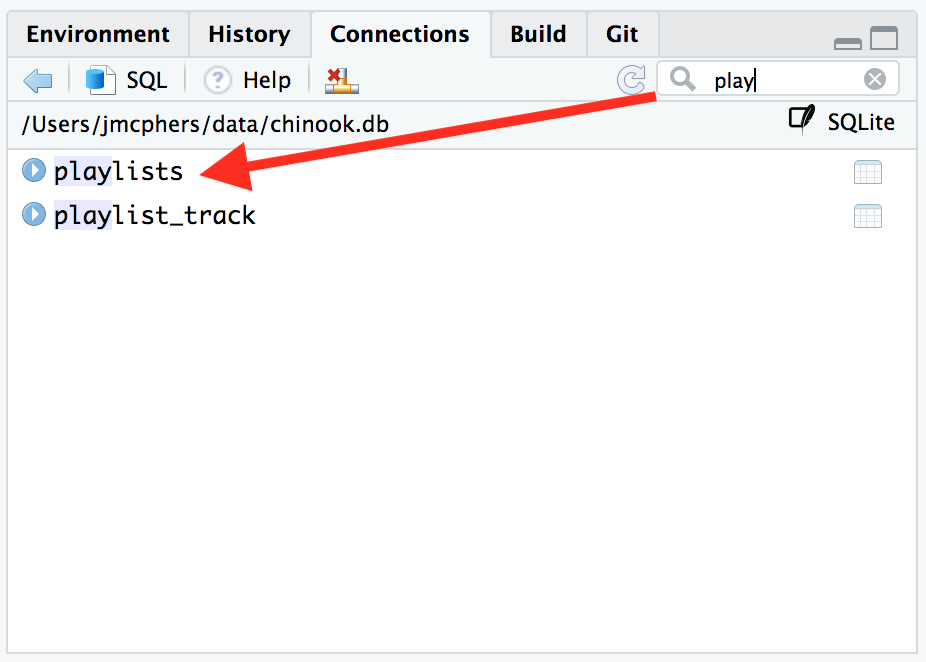

2018-10-02
The RStudio 1.2 Preview Release, available today, dramatically improves support and interoperability with many new programming languages and platforms, including SQL, D3, Python, Stan, and C++. Over the next few weeks on the blog, we’re going to be taking a look at improvements for each of these in turn.
Today, we’re looking at SQL, and as a motivating example, we’re going to connect to a sample Chinook database to get a list of album titles.
We’ll start by connecting to the database. When connecting to databases that use usernames and passwords, it’s not uncommon to see passwords stored in plain text in the connection string. It’s not good practice, but it’s understandable; it can be a big hassle to store and retrieve the password securely.
In RStudio 1.2, we’ve made it much easier to secure your credentials. RStudio now integrates with the keyring package. Your password is stored, secure and encrypted, on your system’s credential store (such as the MacOS Keychain or Windows Credential Store), so you can share your R code without leaking your password.
Instead of being prompted to make the password part of the connection string, you’ll get a prompt to save it to your keyring.

You can also take advantage of RStudio’s API to prompt for secrets in your own packages. See Using Keyring for more information.
Great, we’re connected; it’s time to make a query! It’s now a lot easier to build and execute SQL queries in RStudio. First, use the SQL button to generate a new SQL file with the open connection:

Now we need to refine our query with the fields we’re interested in. RStudio can now autocomplete table names and field names associated with a connection. This works in .sql files, R Markdown documents, and R Notebooks. We’ll use this to pick up the name of the Title field without extra typing or guessing.

You’ll notice that there’s a magic comment RStudio added to the top of the file:
-- !preview conn=conThis comment tells RStudio to execute the query against the open connection named con. We can now click Preview or press Ctrl + Shift + Enter to run the query. Results appear in a new tab:

You can also preview every time you save, if you’re iterating quickly on your query and want to watch the results take shape as you go.
Finally, you can now filter the list of displayed tables in the Connections pane by name. This is very useful when your database has a lot of tables!

If you’d like to try these new features out now, you can download the latest preview release of RStudio from https://www.rstudio.com/products/rstudio/download/preview/. If you do, we’d very much appreciate your feedback on the RStudio Community Forum!